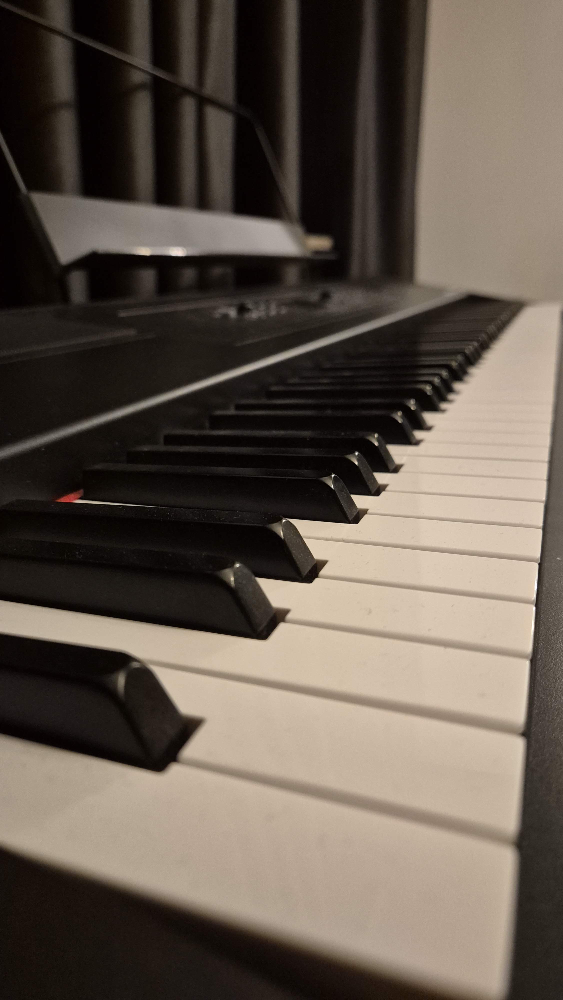
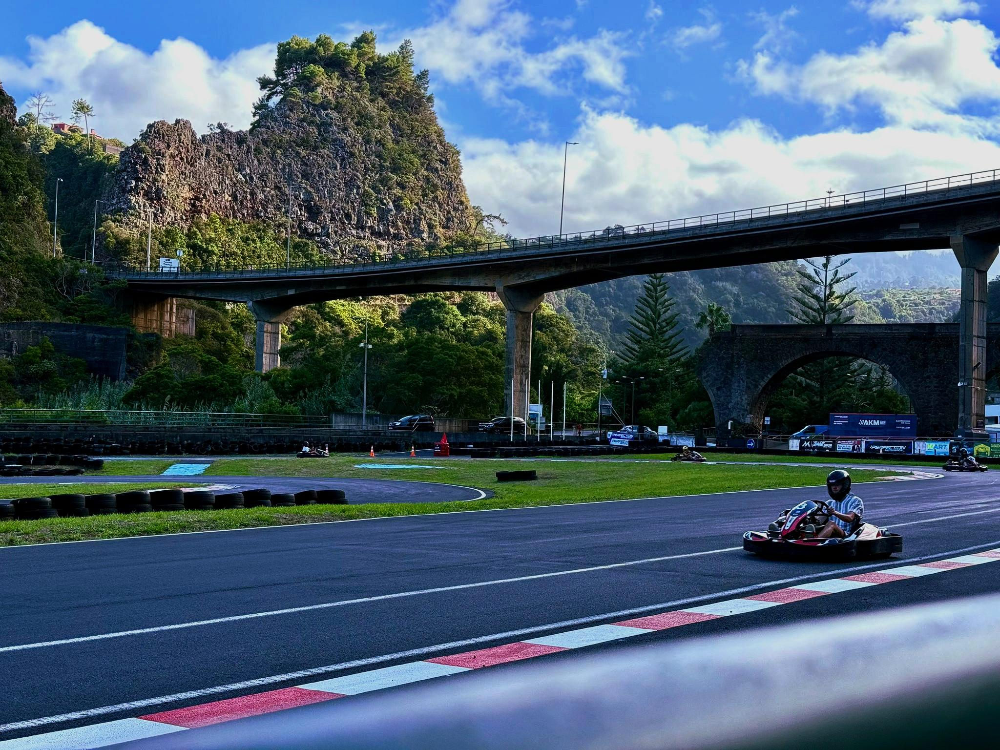
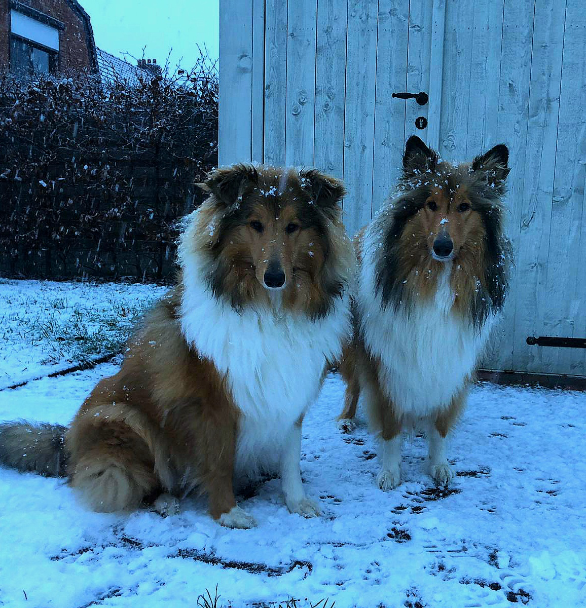
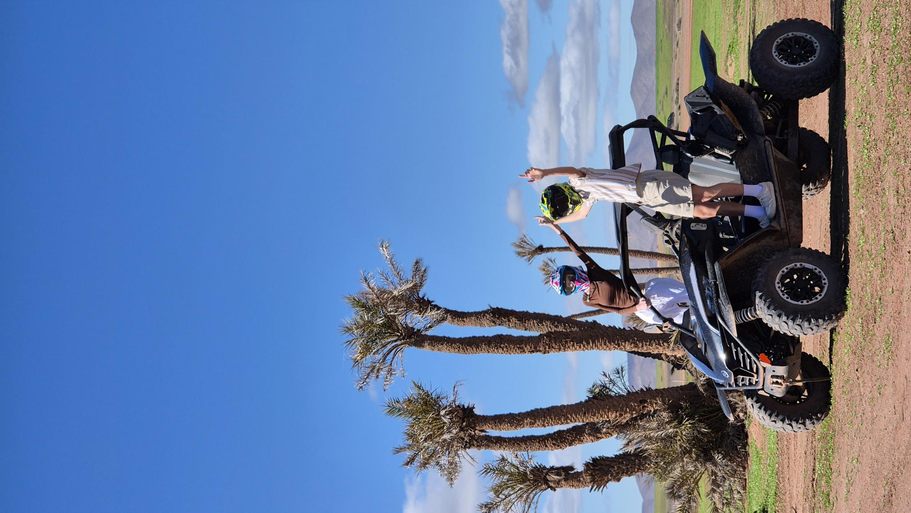

Mijn hobby's/intresses
| Binnen | Buiten |
|---|---|
| Gaming | Karten |
| Piano spelen | Honden |
| LEGO bouwen | Reizen |
Gaming
Een van mijn grootste hobby's is gamen. Ik doe dit vooral samen met vrienden, omdat het dan veel leuker en gezelliger is. We spelen vaak online en werken samen in teams of nemen het tegen elkaar op. De games die ik het meest speel zijn Rocket League, EA Sports FC 25 en ARC Raiders. Elke game heeft zijn eigen stijl en uitdagingen, waardoor het nooit saai wordt. Gamen is voor mij een goede manier om te ontspannen na school of andere verplichtingen. Tegelijkertijd helpt het ook om contact te houden met vrienden en samen plezier te maken.
Piano spelen
Piano spelen is een hobby waar ik veel rust in vind. Ik leer dit volledig op mezelf en neem geen lessen. In plaats daarvan probeer ik nieuwe liedjes te leren door te oefenen en door video's of tutorials te bekijken. Het is soms een uitdaging, maar dat maakt het ook juist leuk. Wanneer ik merk dat ik vooruitgang maak en een liedje steeds beter kan spelen, geeft dat veel voldoening. Piano spelen helpt mij ook om creatief bezig te zijn en even tot rust te komen. Muziek maken is voor mij een manier om mezelf uit te drukken en mijn concentratie te verbeteren.

LEGO bouwen
Een andere hobby van mij is bouwen met LEGO. Ik vind het leuk om sets stap voor stap in elkaar te zetten en te zien hoe alles uiteindelijk samenkomt tot één groot geheel. Tijdens het bouwen moet je goed opletten en de instructies volgen, wat mijn concentratie en geduld traint. Tegelijkertijd is het ook gewoon ontspannend om mee bezig te zijn. Wanneer een set klaar is, geeft dat een gevoel van voldoening omdat je iets hebt gemaakt dat je ook echt kan zien en vasthouden.
Karten
Een andere hobby van mij is karten. Ik vind het leuk om de snelheid en de spanning van het rijden te ervaren. Wanneer ik ga karten, probeer ik altijd zo snel mogelijk rondjes te rijden en mijn techniek te verbeteren. Het is een activiteit waarbij concentratie en controle belangrijk zijn, omdat je goed moet sturen, remmen en het juiste moment moet kiezen om sneller te gaan. Vaak ga ik karten met vrienden, wat het nog leuker maakt omdat we elkaar proberen te verslaan en kijken wie de snelste tijd kan rijden. Karten is voor mij een spannende en leuke manier om actief bezig te zijn en plezier te maken.

Honden
Ik breng ook graag tijd door met mijn honden. Ik heb twee Schotse collies. Met hen ga ik vaak wandelen en spelen. Tijdens het wandelen kom ik buiten in de natuur, wat erg ontspannend kan zijn. Mijn honden zijn ook erg energiek en speels, waardoor het altijd leuk is om met hen bezig te zijn. Het verzorgen en tijd doorbrengen met mijn honden geeft mij veel plezier.

Reizen
Een hobby die ik ook erg leuk vind, is reizen. Ik vind het interessant om nieuwe plaatsen te ontdekken, andere culturen te leren kennen en nieuwe ervaringen op te doen. Door te reizen zie je hoe mensen in andere landen leven en leer je veel over de wereld. Ik ben al op verschillende mooie bestemmingen geweest, zoals Marrakesh in Marokko, Curaçao en Madeira in Portugal. Elke reis is anders en heeft zijn eigen bijzondere momenten. Tijdens het reizen vind ik het leuk om nieuwe plekken te bezoeken, lokale gerechten te proberen en mooie landschappen te zien. Reizen geeft mij veel nieuwe indrukken en herinneringen die ik nooit zal vergeten.
